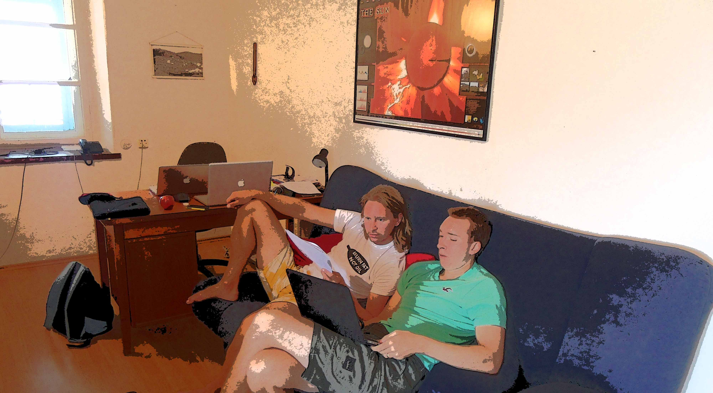

I have just returned from a research trip in Croatia (8--19th September), with my friend and long-time collaborator Dr. Jasa Calogovic. Every now-and-then Jasa and I manage to have some schedule overlap for a collaborative trip: This time, he kindly put my wife and I up the beautiful Hvar Observatory, which is built around (and inside of) a Napoleonic Fortress.
The theme of the trip was Sun: from the Sun-kissed Adriatic island, Jasa's Solar observatory, to the research itself. Apart from taking some time to develop future project strategies we wrote a synthesis paper, tentatively titled Reflections on the late Cosmoclimatology, which we hope will appear in the Central European Astrophysical Bulletin. The piece briefly outlines the state the field of Sun-Earth links today in relation to some of the grander claims over the past (roughly) 20 years, and where future research lines are likely to yield interesting discoveries.
We also made a final check after copy-editing of our contribution to TOSCA's forthcoming book, which will be called Earth's climate response to a changing Sun, the book has 61 authors, and was coordinated by Professors Jean Lilensten, Thierry Dudock de Wit, and Katja Matthes, to be published by EDP sciences. It looks great, and a lot of hard work went into it. I will write a more detailed post in the future when it is finally available.
Go Top
comments powered by Disqus